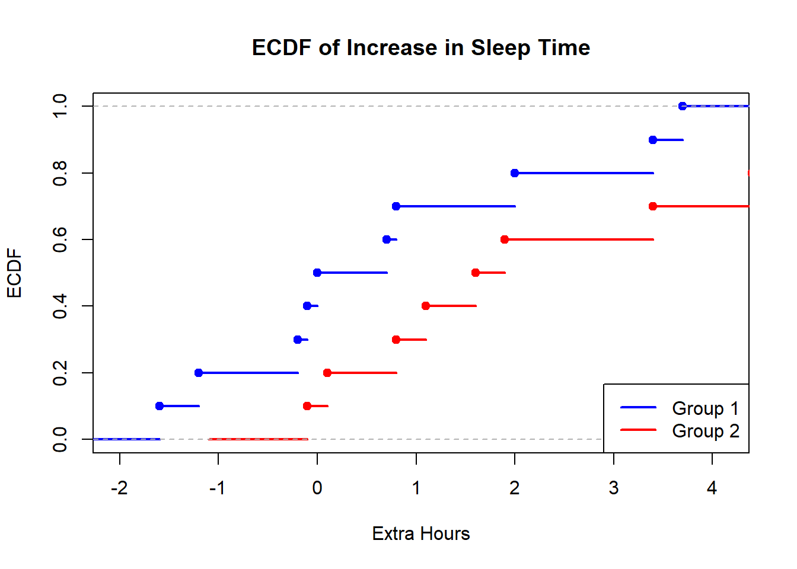

data(sleep)
print(head(sleep)) extra group ID
1 0.7 1 1
2 -1.6 1 2
3 -0.2 1 3
4 -1.2 1 4
5 -0.1 1 5
6 3.4 1 6data(sleep)
print(head(sleep)) extra group ID
1 0.7 1 1
2 -1.6 1 2
3 -0.2 1 3
4 -1.2 1 4
5 -0.1 1 5
6 3.4 1 6g1 <- sleep$extra[sleep$group == 1]
g2 <- sleep$extra[sleep$group == 2]
print(head(g1))[1] 0.7 -1.6 -0.2 -1.2 -0.1 3.4print(head(g2))[1] 1.9 0.8 1.1 0.1 -0.1 4.4plot(ecdf(g1), main = "ECDF of Increase in Sleep Time",
xlab = "Extra Hours", ylab = "ECDF", col = "blue", lwd = 2)
lines(ecdf(g2), col = "red", lwd = 2)
legend("bottomright", legend = c("Group 1", "Group 2"),
col = c("blue", "red"), lwd = 2)
Interpretation
Both do not overlap with each other and are noticeably different from each other, so the sleep time is therefore not the same in both groups.
m1_real <- mean(g1)
print(m1_real)[1] 0.75m2_real <- mean(g2)
print(m2_real)[1] 2.33set.seed(123)
B <- 10000
boot_bias <- function(x) {
n <- length(x)
boot_means <- replicate(B, mean(sample(x, n, replace = TRUE)))
mean(boot_means) - mean(x)
}
bias_g1 <- boot_bias(g1)
bias_g2 <- boot_bias(g2)
print(bias_g1)[1] -0.008298print(bias_g2)[1] 0.001165set.seed(123)
n <- 10
nsim <- 1000
sigma2_hat <- numeric(nsim)
for(i in 1:nsim){
x <- rnorm(n, mean = 0, sd = 1)
sigma2_hat[i] <- (1/n) * sum((x - mean(x))^2)
}
mean_estimate <- mean(sigma2_hat)
bias <- mean_estimate - 1
print(mean_estimate)[1] 0.8985435print(bias)[1] -0.1014565getAnywhere(var)A single object matching 'var' was found
It was found in the following places
package:stats
namespace:stats
with value
function (x, y = NULL, na.rm = FALSE, use)
{
if (missing(use))
use <- if (na.rm)
"na.or.complete"
else "everything"
na.method <- pmatch(use, c("all.obs", "complete.obs", "pairwise.complete.obs",
"everything", "na.or.complete"))
if (is.na(na.method))
stop("invalid 'use' argument")
if (is.data.frame(x))
x <- as.matrix(x)
else stopifnot(is.atomic(x))
if (is.data.frame(y))
y <- as.matrix(y)
else stopifnot(is.atomic(y))
.Call(C_cov, x, y, na.method, FALSE)
}
<bytecode: 0x000001fb4a9c39a8>
<environment: namespace:stats>We need to reference C_Cov which is a c function:
https://github.com/SurajGupta/r-source/blob/master/src/library/stats/src/cov.c
According to GPT this uses the \[\sigma^{2} = \frac{1}{n - 1} \sum (X_i - X)^{2}\] formula.
var_estimate <- var(sigma2_hat)
var_estimate[1] 0.1803297mse <- mean((sigma2_hat - 1)^2)
mse[1] 0.1904428Relationship:
\[MSE = Bias^{2} + Var\]
simulate_mean_median <- function(n_sim, n, mu = 0, sigma = 1) {
means <- numeric(n_sim)
medians <- numeric(n_sim)
for (i in 1:n_sim) {
sample_data <- rnorm(n, mean = mu, sd = sigma)
means[i] <- mean(sample_data)
medians[i] <- median(sample_data)
}
data.frame(mean = means, median = medians)
}
simulate_mean_median(5, 10) mean median
1 0.31684645 0.02913906
2 -0.27844971 -0.15297483
3 0.22452611 -0.04825551
4 0.17742490 -0.07154144
5 0.08416419 0.02711999set.seed(123) # reproducibility
sample_sizes <- c(10, 100, 1000)
n_sim <- 10000
mu <- 0
sigma <- 1
results <- list()
for (n in sample_sizes) {
sim <- simulate_mean_median(n_sim, n, mu, sigma)
bias_mean <- mean(sim$mean) - mu
bias_median <- mean(sim$median) - mu
var_mean <- var(sim$mean)
var_median <- var(sim$median)
results[[as.character(n)]] <- data.frame(
sample_size = n,
bias_mean = bias_mean,
bias_median = bias_median,
var_mean = var_mean,
var_median = var_median
)
}
do.call(rbind, results) sample_size bias_mean bias_median var_mean var_median
10 10 9.767488e-04 -4.311294e-04 0.0985392612 0.136179998
100 100 -8.732798e-04 -6.803351e-05 0.0100479674 0.015615860
1000 1000 3.598334e-05 1.957266e-04 0.0009955769 0.001562524The estimators for mean should be unbiased as the bias is very tiny (3 magnitudes smaller) than the sample mean values we calculated in a). Meanwhile the median should also be unbiased for a similar reason. The higher the number of samples drawn per simulation the better the estimator regarding the mean. But the median estimator seems to be much less affected which makes it better.
variances <- c(1, 4, 9)
n <- 100
n_sim <- 1000
results_var <- list()
for (sigma2 in variances) {
sim <- simulate_mean_median(n_sim, n, mu = 0, sigma = sqrt(sigma2))
bias_mean <- mean(sim$mean) - mu
bias_median <- mean(sim$median) - mu
var_mean <- var(sim$mean)
var_median <- var(sim$median)
results_var[[as.character(sigma2)]] <- data.frame(
variance = sigma2,
bias_mean = bias_mean,
bias_median = bias_median,
var_mean = var_mean,
var_median = var_median
)
}
do.call(rbind, results_var) variance bias_mean bias_median var_mean var_median
1 1 -0.0010150393 -0.002872195 0.009908471 0.01586280
4 4 -0.0007436291 0.001219850 0.039908931 0.06546843
9 9 -0.0029848768 -0.005750236 0.083102567 0.13218856Increasing the n_sim to 10000 would cause bias and variance to be more precise.